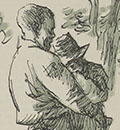
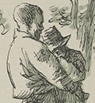

Representing Jim, 1885-1985
"Who dah?" This is Jim's first line, which is also the novel's first line of dialogue. It's a good question for Jim to ask. One of the greatest issues raised by the novel is "who is there" as far as Jim is concerned -- a human being? a piece of property? What makes Huck decide to "go to hell" in the scene in Chapter 31 that most critics call the moral climax of the story is that he can "see Jim before me," instead of the figure his culture has told him is there: "Miss Watson's nigger." But how the novel as a whole "sees" him is a question that remains very controversial.
As a perennially popular text, Huck Finn has appeared in numerous editions, many of them illustrated. Every illustrator must "see Jim" in order to draw him, and at the same time their various illustrations together say a lot about the way that American book-makers and book-buyers have imagined the African American slave.
Gathered on this page are examples from every American artist between 1885 to 1985 who depicted "Jim" for an illustrated edition of the novel. I think the pictures below tell a story -- about the persistence of racist stereotypes and the slow emergence of the conviction that Jim is a character whose humanity is the equal of Huck's or, say, Col. Grangerford's -- but I've tried not to impose my reading too narrowly on these selections. Whenever there were more than two pictures of "Jim," I've tried to choose complementary ones: i.e. to include the pictures that seemed to me the least as well as the most racist in their representation of Jim. (For more about each artist and edition, including all the images of Jim in each book, use the MORE links below.)
We begin with E.W. Kemble, who not only was the first illustrator to bring the image of "Jim" into visual existence, but who also went on from that job to specialize as a professional illustrator in "Negro drawings," as he called himself in the essay he wrote in 1930 on "Illustrating Huckleberry Finn." In what he says there we hear a racism so deeply held and so naive that it is not even faintly aware of itself, especially when he talks about the white boy whom he hired to pose for all the book's characters, and how much that boy enjoyed impersonating "Jim": "he would jam his little black wool cap over his head, shoot out his lips and mumble coon talk" (to see Kemble's essay, click here). The way he depicts Jim is wholly consistent with this conception, as can be seen in these examples:
Unfortunately, as Kemble unfortunately puts it, "my coons caught the public fancy." He remained the definitive interpreter of "Jim" for over a generation. Webster & Co. used 43 of his drawings in the 1891 "Cheap Edition" of Huck Finn. He was hired by Harpers to provide three more polished illustrations for the 1898 edition of the novel as part of a multi-volume set of MT's works. (These were also used, along with a fourth illustration, in the American Publishing Company's 1899 "Édition de Luxe" Huck Finn.) Again in 1899 Kemble was hired by the New York World to do three new pictures as part of the paper's Christmas tribute to MT. Only one of Kemble's 1898 illustrations depicts Jim: he's watching Huck practice his impersonation of a girl (below left). I've paired this with Kemble's "Negro drawing" that Harper's used for a frontispiece: Huck's arrival at the Phelpses' (below right). Jim is in all three of the drawings he did for the World; two feature him, in particularly demeaning moments.
As late as 1930 seventeen of Kemble's 1885 illustrations, including six of Jim, were used in a new children's edition of the novel brought out by Goldsmith Publishing Co. as part of the RedStar Classics Series. And in 1933 the Limited Editions Club published a lavish version of the novel which included all of Kemble's original illustrations; for the title page of this edition Kemble did one last drawing of Jim, sandwiched between Huck and Tom, and looking at the novel. Since Jim is illiterate (it was against the law in Missouri to teach slaves to read) Kemble might have meant for him to be looking at the pictures; if so, you have to wonder what he would have said about the way he's drawn.
The next American illustrator to see "Jim" was Worth Brehm, who was hired in 1923 by Harper & Brothers, MT's publisher since the 1890s, to illustrate a new edition of the novel. Brehm did 13 illustrations: a color frontispiece and a dozen full-page black-and-white images. Jim is present in two of these, but only as a member of the Duke's audience in the second one, so for this exhibit I've paired Brehm's representation of Jim seeing Huck on Jackson's Island with his drawing of Nat, the slave who regularly takes food to Jim in the shed at the Phelpses' and the second-most prominent black character in the novel. To my eye Jim on his knees in front of that tree looks eerily like a scene from a lynching, and I expect Brehm's "Nat" will look like a caricature to just about everyone. (MORE)
Norman Rockwell illustrated the novel in 1940 for the Heritage Press. Jim appears in two of Rockwell's 8 full-color illustrations, including the one below left of Jim consulting the hairball, one of the most frequently illustrated of all the scenes in the novel. I have not found any American illustrator who depicts Jim at what to me is his best, most fully human moment, when in Chapter 15 he accuses Huck of being "trash" for mistreating his friend -- although in 1955 one British artist drew that scene). But Rockwell also made a black-and-white drawing for the head of each of the novel's chapters. These black-and-white sketches usually depict objects rather than people, but Rockwell's drawing for Chapter 15 represents Jim. Harpers added chapter titles to the novel after MT's death, and this edition, like most of the others below, use the titles as part of their text. Calling Chapter 15 "Fooling Poor Old Jim" points toward that moment when Jim reproaches Huck for making a fool of him "wid a lie," but there is no sign of Jim's legitimately righteous indignation in Rockwell's representation. (MORE.)
Thomas Hart Benton included Huck and Jim in the mural he painted at the Missouri State Capitol in 1936 and so made a slave trying to escape from Missouri a visible part of the state's past. But Jim as he drew him in the illustrations he prepared for the 1942 Limited Editions edition of Huck Finn was less impressive -- more the stereotypical "uncle" than a man.


Another scene the illustrators loved to depict is the moment when Jim first sees Huck on Jackson's Island, and falls to his knees in the belief that he is being haunted by a ghost. Here is that moment as depicted by Zansky, illustrator of the Classics Comics version of the novel which came out in 1946. I've paired it with the title page, which as far as I can tell is the earliest edition of the novel to use the image of Huck and Jim together on the raft to define the story. That iconography -- the white boy, the black slave, the raft on the river -- has become probably the most familiar visual way to identify the novel; many modern paperback covers, and posters for the 1985 Broadway musical Big River, use the image. (MORE)
For the Rainbow Classics Series, the World Publishing Company hired Baldwin Hawes to illustrate the novel in 1947. He too drew the scene of Jim and the hairball, but chose for the frontispiece a representation of Huck and Jim on the raft. (MORE.)
In 1948 Grosset & Dunlap brought out Huck Finn in the Illustrated Junior Library, with over ten full-page and sixty half-page illustrations by Donald McKay. The one on the left is from Chapter 12; on the right, from Chapter 39. (MORE.)


When Doubleday brought out the novel in 1954, Richard M. Powers -- one of their regular illustrators -- created 43 black-and-white half-page illustrations for the chapter heads. Jim is in 13 of them, including the one below right, which I've paired with the one color illustration Powers did, for the frontispiece. (MORE.)

The full-color cover John Falter created for the 1962 Macmillan Classics edition gave Jim a place with Huck on the raft, but in the volume's black-and-white illustrations Falter represents "Jim" more as a caricature than as a character. The left-hand picture below is the familiar one of Jim and Huck as a ghost; the other is from the very end, after Tom gives Jim $40 for playing prisoner so well. Falter's drawings are accompanied by quotations from the text; Jim's voice, in his thick dialect, is the only voice other than Huck's that readers hear in any of the edition's captions. (MORE.)
In 1963 Grosset & Dunlap brought out an edition of the novel as the third volume in its new Hardy Boys Favorite Classic series (the other available titles are Tom Sawyer and Stevenson's Treasure Island). The book's cover illustration puts two white boys (presumably Frank and Joe Hardy) on the raft. Inside are eleven black-and-white drawings, including three with Jim in them. Below left: the first representation of Jim, when he sees Huck's ghost on Jackson's Island. Below right: the final representation, as he plays his part as a "prisoner of style" in the Evasion Tom produces at the Phelps'.


In 1978 Harper & Row brought out in one volume The Complete Adventures of Tom Sawyer and Huck Finn, with illustrations by Warren Chappell. His choice of the scene where Jim sees a "ghos'" aligns his work with the tradition Kemble began, but in other drawings he indicates how that tradition had changed. (MORE.)
 
Finally, as a Centennary Edition in 1985, the Mark Twain Papers at the University of California collaborated with the Pennyroyal Press to bring out a text with 49 wood engravings by Barry Moser. The first, captioned "Jim," is for Chapter 2; the second, "Never Saying a Word," for Chapter 12. (MORE.)


By 1985 Huck Finn was being regularly attacked for its representation of Jim and the other black characters, and had become one of the books most frequently banned from American schools. Implicitly, at least, Moser's illustrations, which "see Jim" as a person of great dignity, provide a kind of rejoinder to this critique. But which artist's work most faithfully illustrates the novel's text? How do MT's words represent Jim -- as a character or a caricature? These remain questions that readers must answer for themselves.


){kind=link}